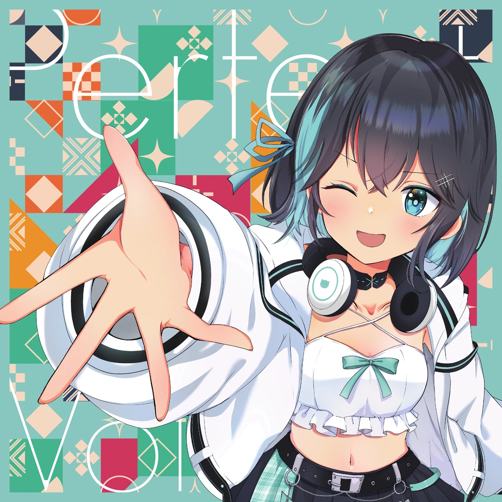

ジャケットをダウンロード
YCK-002 / LYRICS & MV
Perfect Voltage
Yocha2K feat. 宮舞モカ
TRACKLIST
9 tracksSELECT A TRACK
曲を選んでください
上の曲名をタップすると歌詞が表示されます。

ジャケットをダウンロードYCK-002 / LYRICS & MV
Yocha2K feat. 宮舞モカ
SELECT A TRACK
上の曲名をタップすると歌詞が表示されます。